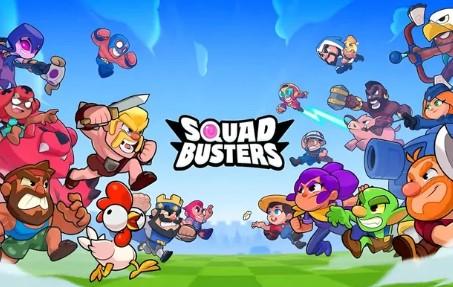

Que saudade que estavámos da Max!
postado 09 de Junho 2024Saiba que Life is Strange Double Exposure foi revelado de surpresa no evento da Microsoft e já tem data para chegar ao PlayStation 5, Xbox Series X|S e PC: 29 de outubro de 2024. A sequência também será lançada para Nintendo Switch posteriormente.
Leia maisSupercell juntou foi tudo!
postado 06 de Junho 2024 Depois de 5 anos desde o último lançamento da Supercell, o estúdio finalmente lançou seu novo jogo mobile, Squad Busters. Dessa vez, os criadores de Clash of Clans, Clash Royale e Brawl Stars lançaram um jogo de ação baseados em partidas curtas de batalha, garantindo uma experiência otimizada para celulares com bastante potencial de diversão (e vício).
Leia mais